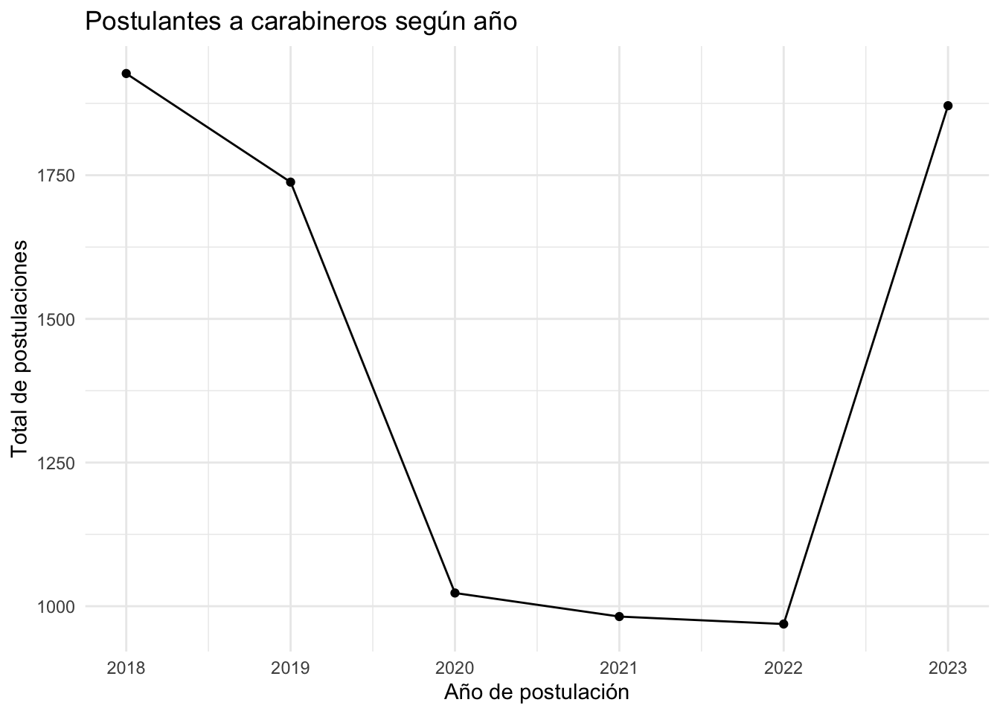
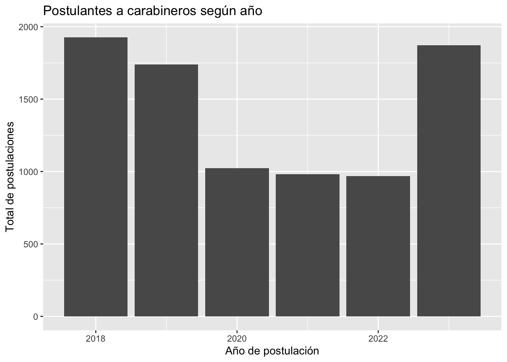
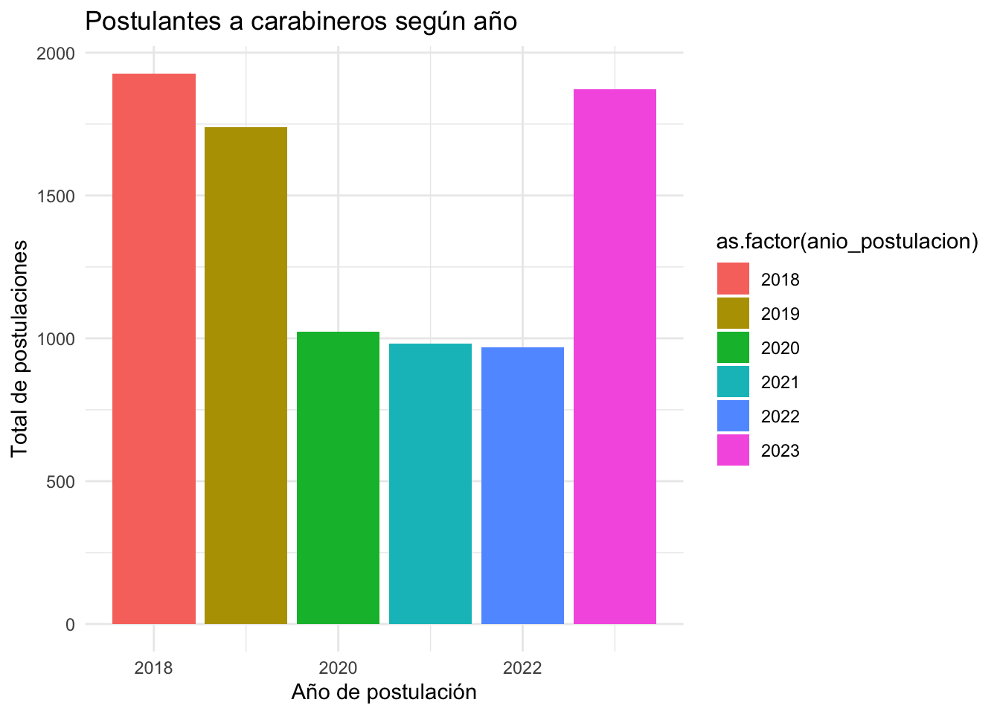
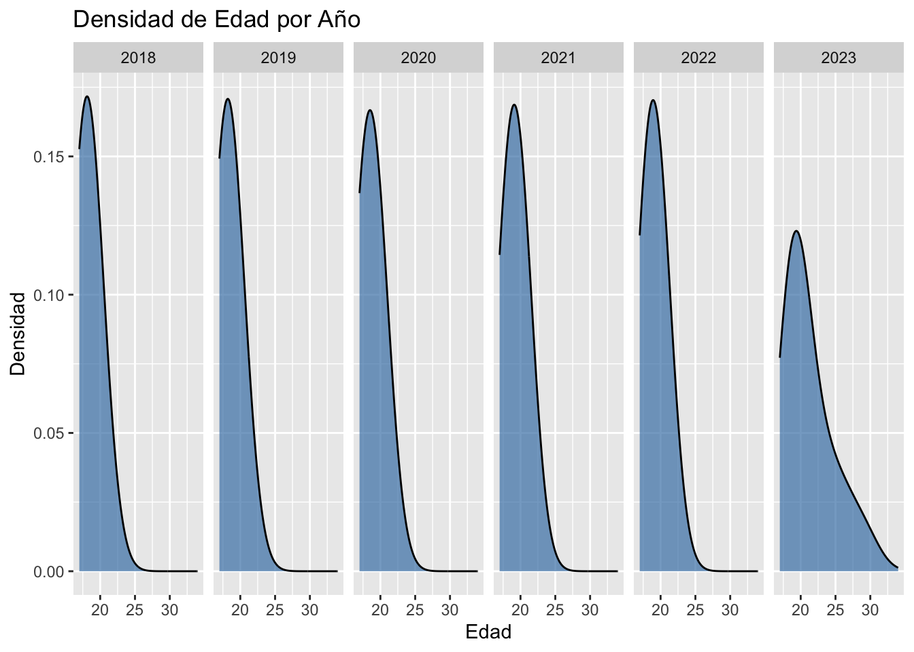
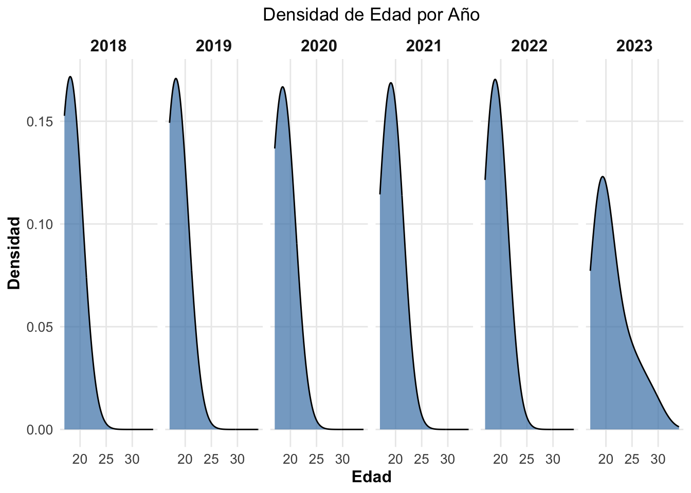

library(tidyverse)
library(readr) # Importanción de datos
library(dplyr) # Funciones de procesamiento
library(ggplot2) # Visualización de datos
library(readxl) #Datos de excel
library(httr)CLASE 3 - Estadística y Visualización
Curso de Introducción a R - Observatorio de Legimación de la Violencia (OLES)
Introducción
El Observatorio de Violencia y Legitimidad Social (OLES) es una plataforma que desarrolla investigación colaborativa en temáticas relacionadas con la violencia, explorando sus sentidos, formas de justificación, así como las diversas formas en que la sociedad chilena ha desarrollado procesos de construcción de legitimidad social frente a las autoridades, considerando el rol de la justicia como elemento clave en la comprensión de las transformaciones sociales que vive actualmente el país.
Este curso de R buscará introducir a los y las participantes en las nociones básicas del software en su interfaz de R Studio. Para su instalación pueden ver el siguiente vídeo pinchando [Aquí].
| Clases |
|---|
| Introducción a R |
| Procesamiento de Datos Cuantitativos con Tidyverse |
| Estadísticas descriptiva y Visualización de datos con Tidyverse |
| Introducción al análisis cuantitativo del texto |
Base de datos y librerías.
url <- "https://github.com/matdknu/intro-r/raw/main/bbdd/eventos_22_24.xlsx"
# Crear un archivo temporal
temp_file <- tempfile(fileext = ".xlsx")
# Descargar el archivo desde GitHub
GET(url, write_disk(temp_file, overwrite = TRUE))Response [https://raw.githubusercontent.com/matdknu/intro-r/main/bbdd/eventos_22_24.xlsx]
Date: 2024-08-08 15:32
Status: 200
Content-Type: application/octet-stream
Size: 3.08 MB
<ON DISK> /var/folders/hg/s4skq8ks6g1fy2jw2fdkp0840000gn/T//RtmpxX2fbe/file2e2d473d193c.xlsx# Leer el archivo Excel en R
eventos <- read_excel(temp_file)Volvemos a renombrar para trabajar similar a la Clase 2.
eventos <- eventos %>%
rename(
motivo = "MOTIVO",
tipo = "TIPO",
region = "REGION",
n_asistentes = "CANTIDAD ASISTENTES",
fecha_inicio = "FECHA INICIO",
hora_inicio = "HORA INICIO",
fecha_termino = "FECHA TERMINO",
hora_termino = "HORA TERMINO"
)Resumen de datos agrupados.
En R, un “resumen de datos agrupados” se refiere a una técnica para calcular estadísticas descriptivas de un conjunto de datos que ha sido agrupado en categorías o grupos. Esto es útil cuando quieres obtener información agregada o resumida sobre diferentes subgrupos dentro de tu dataset.
Para realizar un resumen de datos agrupados en R, puedes usar funciones como aggregate(), dplyr::group_by() junto con dplyr::summarize() o dplyr::summarise(),
Funciones totales
result <- data_frame |>
group_by(group_column) |>
summarize(
total_sum = sum(n, na.rm = TRUE),
mean_value = mean(n, na.rm = TRUE),
median_value = median(n, na.rm = TRUE),
variance = var(n, na.rm = TRUE),
sd_value = sd(n, na.rm = TRUE),
max_value = max(n, na.rm = TRUE),
min_value = min(n, na.rm = TRUE),
count = n(),
unique_count = n_distinct(n)
)eventos %>%
summarise(mean_ytotcor_region = mean(n_asistentes, na.rm = T))# A tibble: 1 × 1
mean_ytotcor_region
<dbl>
1 131.eventos %>%
summarise(mean_ytotcor_region = mean(n_asistentes, na.rm = T))# A tibble: 1 × 1
mean_ytotcor_region
<dbl>
1 131.Sin decimales.
eventos %>%
summarise(mean_eventos = round(mean(n_asistentes, na.rm = TRUE)))# A tibble: 1 × 1
mean_eventos
<dbl>
1 131eventos |> group_by(region) |>
summarise(mean_eventos_region = round(mean(n_asistentes, na.rm = TRUE)))# A tibble: 16 × 2
region mean_eventos_region
<chr> <dbl>
1 I REGION TARAPACA 148
2 II REGION ANTOFAGASTA 97
3 III REGION ATACAMA 105
4 IV REGION COQUIMBO 82
5 IX REGION ARAUCANIA 63
6 REGION METROPOLITANA 184
7 V REGION VALPARAISO 147
8 VI REGION LIB.B.O'HIGGINS 65
9 VII REGION MAULE 113
10 VIII REGION BIO BIO 125
11 X REGION LOS LAGOS 65
12 XI REGION AYSEN DEL GRL. C.IBANEZ 54
13 XII REGION MAGALLANES Y ANT.CHILENA 74
14 XIV REGION LOS RIOS 101
15 XV REGION ARICA Y PARINACOTA 55
16 XVI REGION NUBLE 181Probando otra base de datos institucional
postulantes_anio <- read_excel("/Users/matdknu/Dropbox/OLES/intro-r/bbdd/postulantes_anio.xlsx")Recodificación. A veces sale más fácil recodificar con el R base.
colnames(postulantes_anio)[1] <- "anio_postulacion"
colnames(postulantes_anio)[2] <- "genero"
colnames(postulantes_anio)[3] <- "fecha_nac"
colnames(postulantes_anio)[4] <- "edad"
colnames(postulantes_anio)[5] <- "comuna"
colnames(postulantes_anio)[6] <- "region"Ahora, no existe una cantidad postulantes por año, por lo que es importante crea una variable que tenga algún número que permita la manipulación de datos continuos. Las dos formas de realizarlo.
postulantes_anio$n <- 1
postulantes_anio |> mutate(n = 1)# A tibble: 8,510 × 7
anio_postulacion genero fecha_nac edad comuna region n
<dbl> <chr> <dttm> <dbl> <chr> <chr> <dbl>
1 2018 MASCULINO 1997-05-05 00:00:00 20 LA FLORIDA METRO… 1
2 2018 MASCULINO 1998-07-24 00:00:00 19 PUENTE ALTO METRO… 1
3 2018 MASCULINO 2000-06-05 00:00:00 17 PUENTE ALTO METRO… 1
4 2018 MASCULINO 2000-07-24 00:00:00 17 TALAGANTE METRO… 1
5 2018 MASCULINO 2000-08-03 00:00:00 17 SAN BERNAR… METRO… 1
6 2018 MASCULINO 2000-04-27 00:00:00 17 MAIPU METRO… 1
7 2018 MASCULINO 1999-09-30 00:00:00 18 ÑUÑOA METRO… 1
8 2018 MASCULINO 2000-07-26 00:00:00 17 LOS MUERMOS LOS L… 1
9 2018 MASCULINO 2000-07-26 00:00:00 17 LOS MUERMOS LOS L… 1
10 2018 MASCULINO 2000-05-02 00:00:00 17 LAMPA METRO… 1
# ℹ 8,500 more rowsUna forma de hacer un conteo, considerando la creación de la variable creada, son dos:
conteo <- postulantes_anio %>% count(anio_postulacion); conteo# A tibble: 6 × 2
anio_postulacion n
<dbl> <int>
1 2018 1927
2 2019 1738
3 2020 1023
4 2021 982
5 2022 969
6 2023 1871Sin embargo, también existe la oportunidad de sumar los N.
# Verificar el tipo de datos de la columna n
str(postulantes_anio)tibble [8,510 × 7] (S3: tbl_df/tbl/data.frame)
$ anio_postulacion: num [1:8510] 2018 2018 2018 2018 2018 ...
$ genero : chr [1:8510] "MASCULINO" "MASCULINO" "MASCULINO" "MASCULINO" ...
$ fecha_nac : POSIXct[1:8510], format: "1997-05-05" "1998-07-24" ...
$ edad : num [1:8510] 20 19 17 17 17 17 18 17 17 17 ...
$ comuna : chr [1:8510] "LA FLORIDA" "PUENTE ALTO" "PUENTE ALTO" "TALAGANTE" ...
$ region : chr [1:8510] "METROPOLITANA" "METROPOLITANA" "METROPOLITANA" "METROPOLITANA" ...
$ n : num [1:8510] 1 1 1 1 1 1 1 1 1 1 ...# Convertir la columna n a numérico si es necesario
postulantes_anio <- postulantes_anio |>
mutate(n = as.numeric(n))
# Realizar la agrupación y suma
conteo2 <- postulantes_anio |>
group_by(anio_postulacion) |>
summarize(total_n = sum(n, na.rm = TRUE)); conteo2# A tibble: 6 × 2
anio_postulacion total_n
<dbl> <dbl>
1 2018 1927
2 2019 1738
3 2020 1023
4 2021 982
5 2022 969
6 2023 1871De igual forma, podemos añadir una nueva variable para contrastar.
conteo3 <- postulantes_anio |>
group_by(anio_postulacion, genero) |>
summarize(total_n = sum(n, na.rm = TRUE)); conteo3`summarise()` has grouped output by 'anio_postulacion'. You can override using
the `.groups` argument.# A tibble: 12 × 3
# Groups: anio_postulacion [6]
anio_postulacion genero total_n
<dbl> <chr> <dbl>
1 2018 FEMENINO 650
2 2018 MASCULINO 1277
3 2019 FEMENINO 615
4 2019 MASCULINO 1123
5 2020 FEMENINO 363
6 2020 MASCULINO 660
7 2021 FEMENINO 345
8 2021 MASCULINO 637
9 2022 FEMENINO 356
10 2022 MASCULINO 613
11 2023 FEMENINO 704
12 2023 MASCULINO 1167Y seguir….
conteo4 <- postulantes_anio |>
group_by(anio_postulacion, genero, comuna) |>
summarize(total_n = sum(n, na.rm = TRUE)); conteo4`summarise()` has grouped output by 'anio_postulacion', 'genero'. You can
override using the `.groups` argument.# A tibble: 2,266 × 4
# Groups: anio_postulacion, genero [12]
anio_postulacion genero comuna total_n
<dbl> <chr> <chr> <dbl>
1 2018 FEMENINO ANCUD 2
2 2018 FEMENINO ANGOL 5
3 2018 FEMENINO ANTOFAGASTA 7
4 2018 FEMENINO ARAUCO 7
5 2018 FEMENINO ARICA 7
6 2018 FEMENINO AYSEN 1
7 2018 FEMENINO BUIN 5
8 2018 FEMENINO BULNES 1
9 2018 FEMENINO CABILDO 1
10 2018 FEMENINO CABRERO 2
# ℹ 2,256 more rows¿Ahora? Visualización de datos
Ggplot2 es uno de los paquetes para una correcta visualización de datos. La creatividad y correcta visualización corresponde a cuáles son los objetivos comunicativos.
Además, existe una serie de páginas web que poseen galerías con ejemplos ilustrativos. Dentro de ellos:
- R Graph Gallery
- 30 gráficos de Ggplot2
- Libro de Ggplot2
- Entre otros…
Veamos un gráfico de líneas.
ggplot(conteo2, aes(x = anio_postulacion, y = total_n)) +
geom_line() +
geom_point() +
labs(title = "Postulantes a carabineros según año",
x = "Año de postulación",
y = "Total de postulaciones") +
theme_minimal()
Un gráfico de barras.
ggplot(conteo2, aes(x = anio_postulacion, y = total_n)) +
geom_bar(stat = "identity") + # Usar stat="identity" para barras con valores de y explícitos
labs(title = "Postulantes a carabineros según año",
x = "Año de postulación",
y = "Total de postulaciones") 
ggplot(conteo2, aes(x = anio_postulacion, y = total_n,
fill = as.factor(anio_postulacion))) +
geom_bar(stat = "identity") + # Usar stat="identity" para barras con valores de y explícitos
labs(title = "Postulantes a carabineros según año",
x = "Año de postulación",
y = "Total de postulaciones") +
theme_minimal()
g2 <- ggplot(postulantes_anio, aes(x = edad)) +
geom_density(fill = "steelblue", alpha = 0.7, bw = 2) + # Ajustar el bandwidth con bw a un valor mayor para suavizar las curvas
facet_grid(~ anio_postulacion) +
labs(title = "Densidad de Edad por Año",
x = "Edad",
y = "Densidad")
g2
Un poco más bonito!!
ggplot(postulantes_anio, aes(x = edad)) +
geom_density(fill = "steelblue", alpha = 0.7, bw = 2) + # Ajustar el bandwidth con bw a un valor mayor para suavizar las curvas
facet_grid(~ anio_postulacion) +
labs(title = "Densidad de Edad por Año",
x = "Edad",
y = "Densidad") +
theme_minimal() +
theme(
plot.title = element_text(hjust = 0.5),
strip.text.x = element_text(size = 12, face = "bold"), # Mejorar el estilo del texto del facet
axis.title = element_text(size = 12, face = "bold"), # Mejorar el estilo de los títulos de los ejes
axis.text = element_text(size = 10), # Mejorar el estilo del texto de los ejes
panel.grid.major = element_line(size = 0.5), # Ajustar el tamaño de las líneas de la cuadrícula
panel.grid.minor = element_blank() # Eliminar las líneas menores de la cuadrícula
)Warning: The `size` argument of `element_line()` is deprecated as of ggplot2 3.4.0.
ℹ Please use the `linewidth` argument instead.